Cảnh và thế giới
Cảnh dựng và không gian trong game.

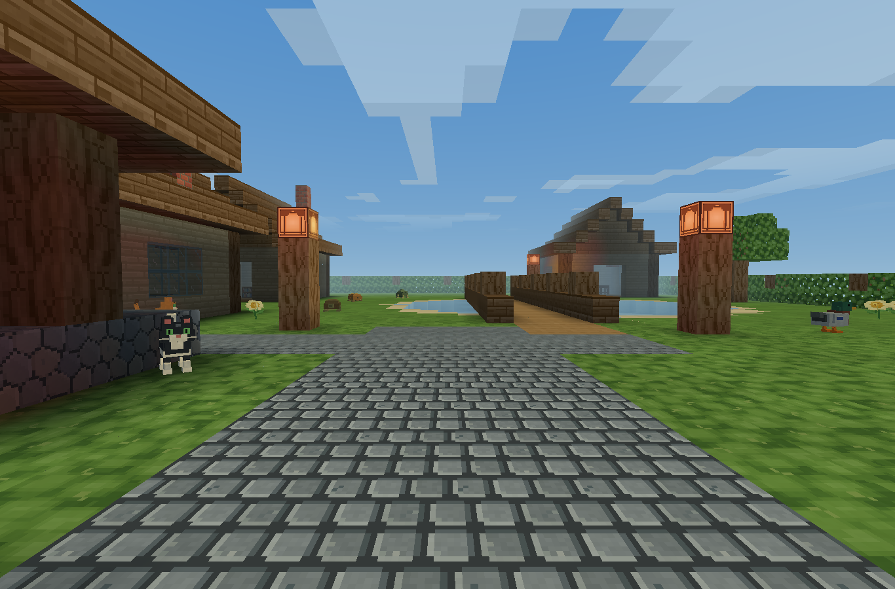
Xóm ven hồ — góc nhìn từ lối vào
Góc nhìn từ lối vào Xóm ven hồ, hướng theo đường lát đá tới cầu gỗ, khoảng mặt nước và những căn nhà gần đó. Phạm vi ảnh là khu vực nhìn thấy từ vị trí máy ảnh này.

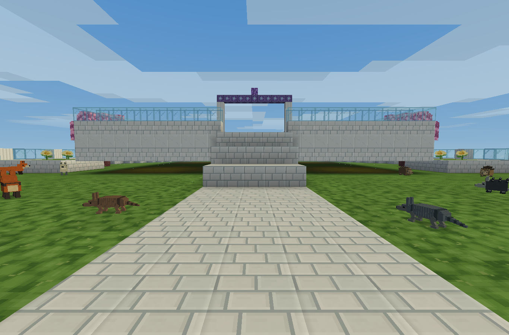
Vườn trên cao — góc nhìn từ lối vào
Góc nhìn từ lối vào Vườn trên cao, hướng tới lối lát sáng, bậc giữa, lan can kính và cổng viền tím. Phạm vi ảnh là khu vực trước máy ảnh, không bao quát mọi tầng của khu vườn.

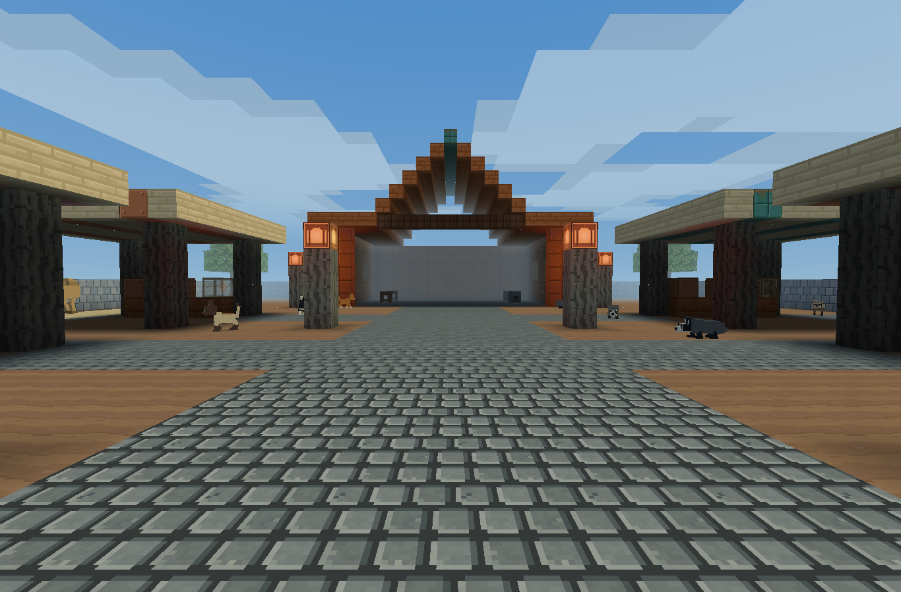
Khu chợ xưởng — góc nhìn từ lối vào
Góc nhìn từ lối vào Khu chợ và xưởng, theo trục đường chính giữa các quầy hai bên tới mặt trước xưởng. Phạm vi ảnh tập trung vào lối đi và những công trình gần trục này.

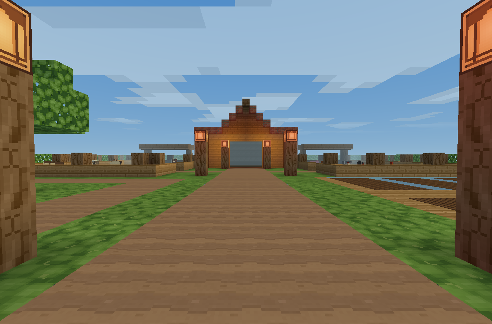
Nông trại ven rừng — góc nhìn từ lối vào
Góc nhìn từ lối vào Nông trại ven rừng, hướng tới nhà kho, hàng rào hai khu chuồng và luống trống cạnh mương bên phải. Ảnh không dùng để đếm toàn bộ sinh vật hoặc chứng minh trồng trọt, thu hoạch hay nung.

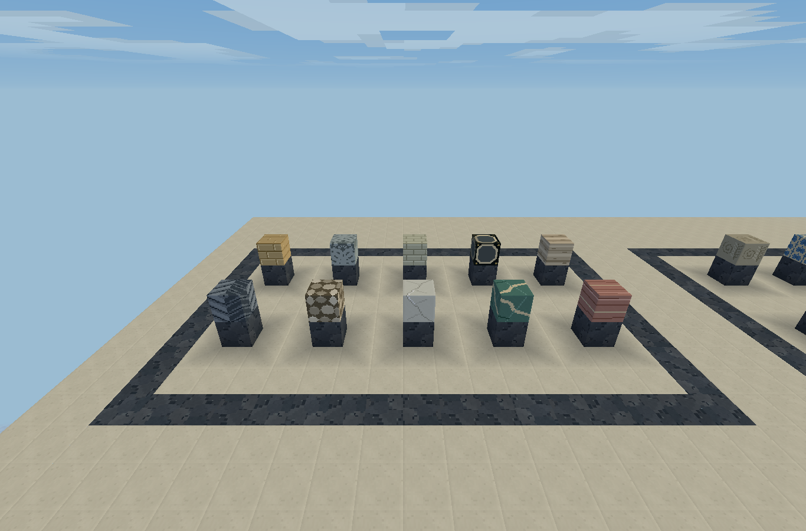
Ô trưng bày 01 — khối 249–258
Ô trưng bày 01 dành cho mười mẫu khối bề mặt ID 249–258 trong Xưởng 100 mẫu mới. Khung hình tập trung vào mặt vật liệu, đường bao và các phần đặc hoặc rỗng của nhóm mẫu này.

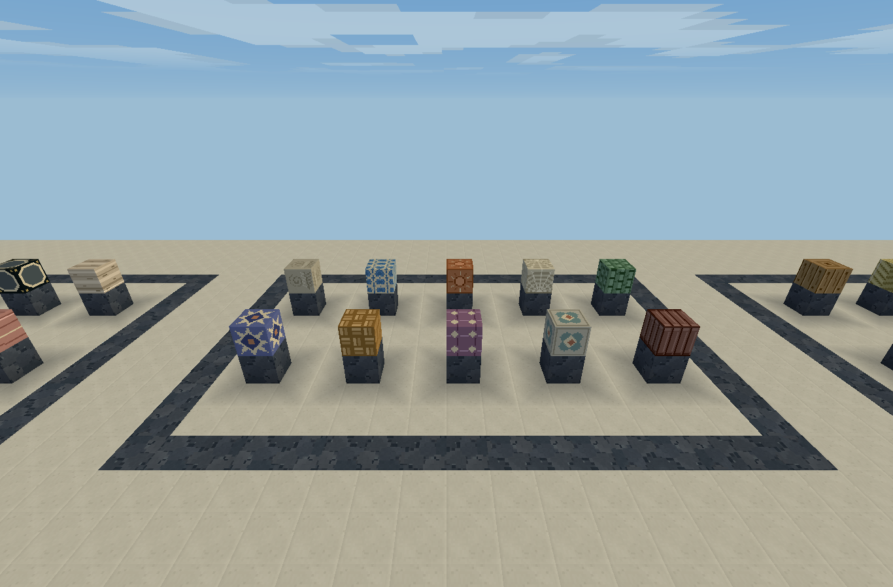
Ô trưng bày 02 — khối 259–268
Ô trưng bày 02 dành cho mười mẫu khối bề mặt ID 259–268 trong Xưởng 100 mẫu mới. Khung hình tập trung vào mặt vật liệu, đường bao và các phần đặc hoặc rỗng của nhóm mẫu này.

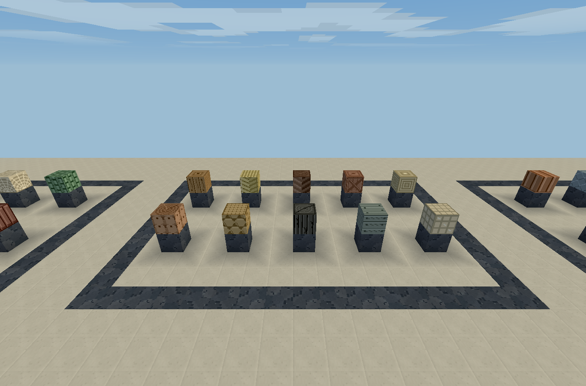
Ô trưng bày 03 — khối 269–278
Ô trưng bày 03 dành cho mười mẫu khối bề mặt ID 269–278 trong Xưởng 100 mẫu mới. Khung hình tập trung vào mặt vật liệu, đường bao và các phần đặc hoặc rỗng của nhóm mẫu này.

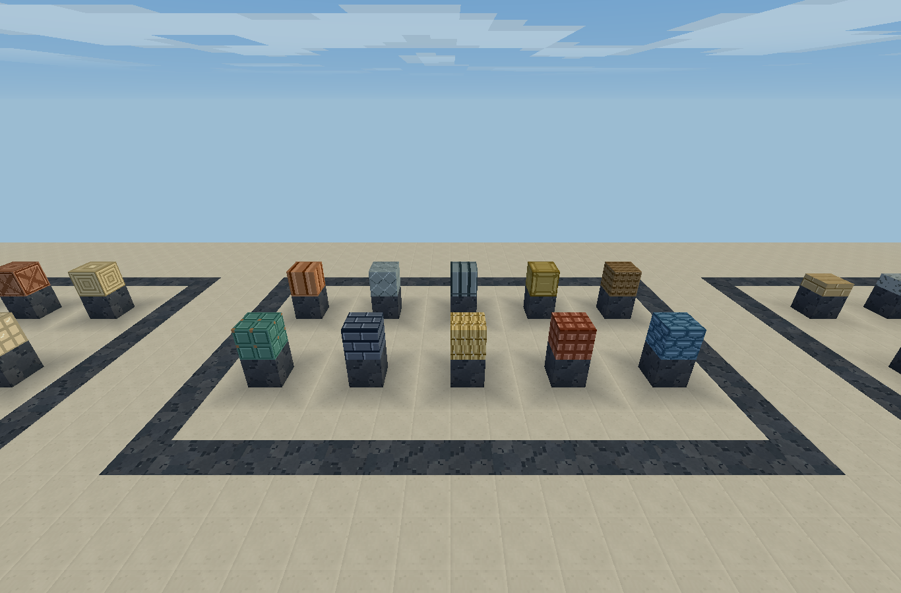
Ô trưng bày 04 — khối 279–288
Ô trưng bày 04 dành cho mười mẫu khối bề mặt ID 279–288 trong Xưởng 100 mẫu mới. Khung hình tập trung vào mặt vật liệu, đường bao và các phần đặc hoặc rỗng của nhóm mẫu này.

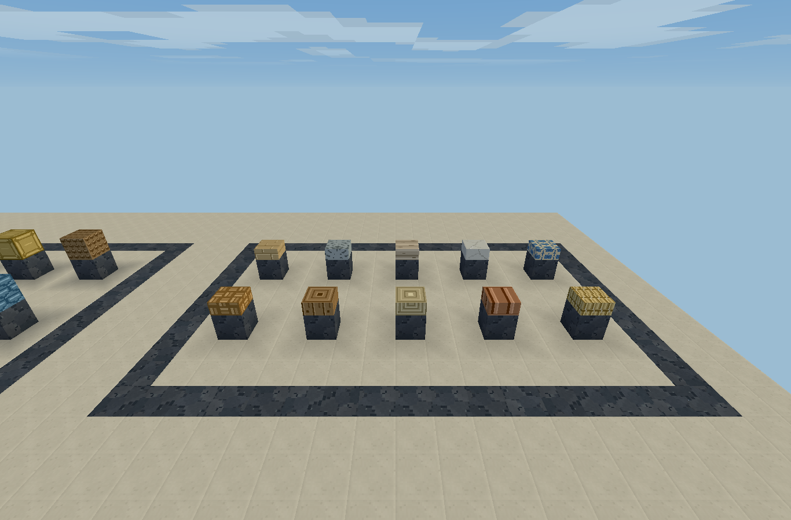
Ô trưng bày 05 — khối 289–298
Ô trưng bày 05 dành cho mười mẫu phiến thấp ID 289–298 trong Xưởng 100 mẫu mới. Khung hình tập trung vào mặt vật liệu, đường bao và các phần đặc hoặc rỗng của nhóm mẫu này.

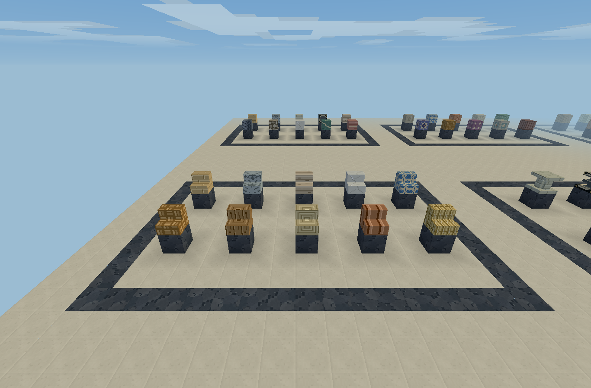
Ô trưng bày 06 — khối 299–308
Ô trưng bày 06 dành cho mười mẫu bậc thang ID 299–308 trong Xưởng 100 mẫu mới. Khung hình tập trung vào mặt vật liệu, đường bao và các phần đặc hoặc rỗng của nhóm mẫu này.

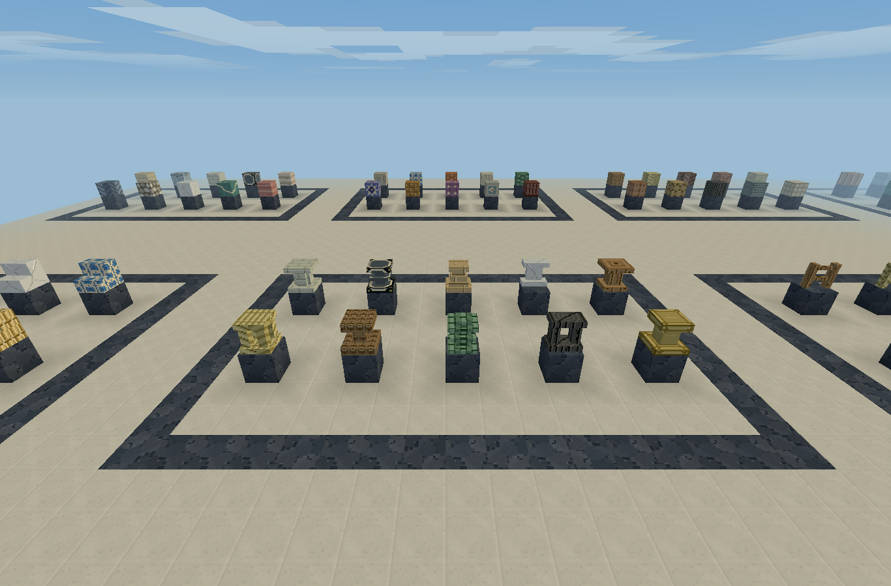
Ô trưng bày 07 — khối 309–318
Ô trưng bày 07 dành cho mười mẫu cột tạo dáng ID 309–318 trong Xưởng 100 mẫu mới. Khung hình tập trung vào mặt vật liệu, đường bao và các phần đặc hoặc rỗng của nhóm mẫu này.

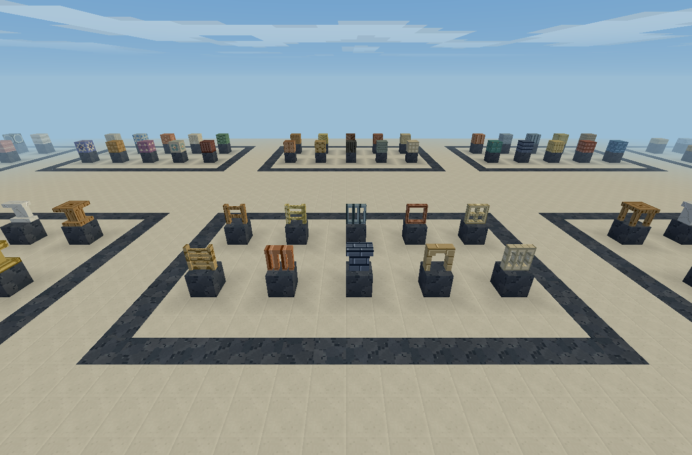
Ô trưng bày 08 — khối 319–328
Ô trưng bày 08 dành cho mười mẫu vách và khung thoáng ID 319–328 trong Xưởng 100 mẫu mới. Khung hình tập trung vào mặt vật liệu, đường bao và các phần đặc hoặc rỗng của nhóm mẫu này.

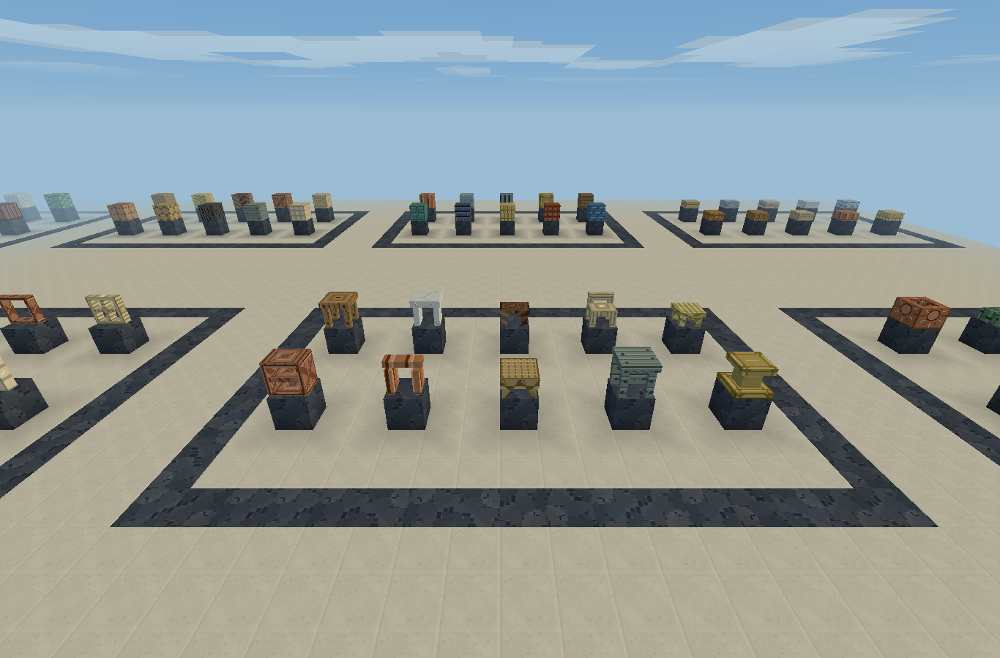
Ô trưng bày 09 — khối 329–338
Ô trưng bày 09 dành cho mười mẫu nội thất trang trí ID 329–338 trong Xưởng 100 mẫu mới. Khung hình tập trung vào mặt vật liệu, đường bao và các phần đặc hoặc rỗng của nhóm mẫu này.

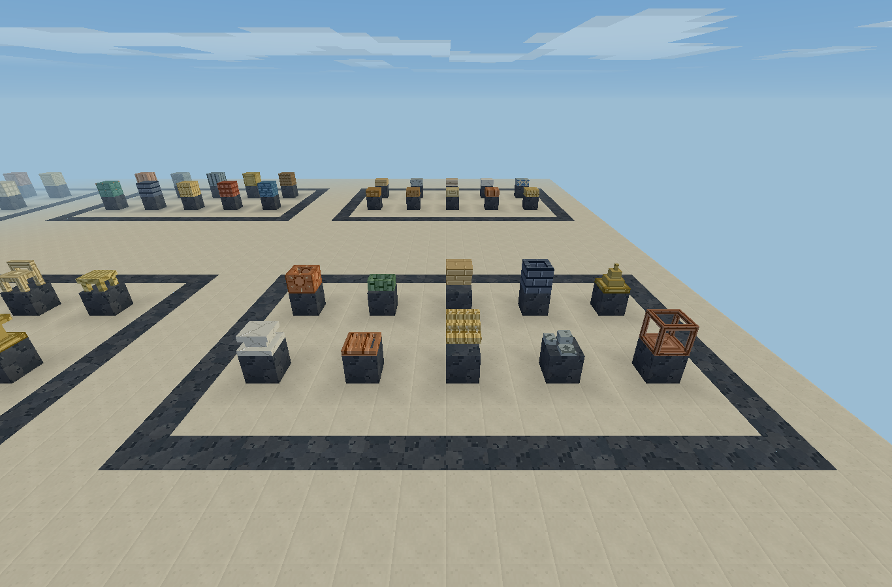
Ô trưng bày 10 — khối 339–348
Ô trưng bày 10 dành cho mười mẫu chi tiết trang trí ID 339–348 trong Xưởng 100 mẫu mới. Khung hình tập trung vào mặt vật liệu, đường bao và các phần đặc hoặc rỗng của nhóm mẫu này.

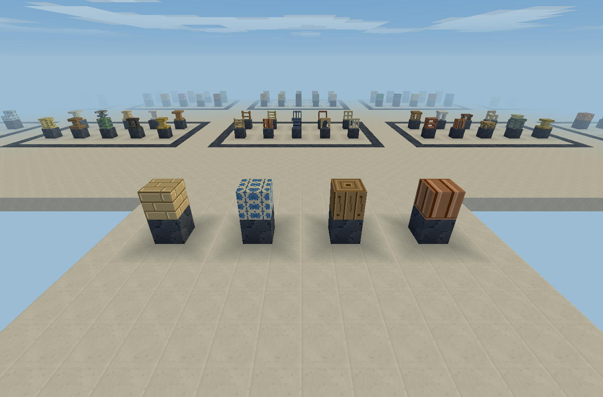
Chi tiết vật liệu — trạng thái bật
Bốn mẫu ID 249, 260, 269 và 279 trong cảnh game khi bật Chi tiết vật liệu, đại diện cho đá, men gốm, gỗ và kim loại. Khung này đi cùng ảnh trạng thái tắt để đối chiếu phản ứng bề mặt ở cùng bố trí và góc máy.

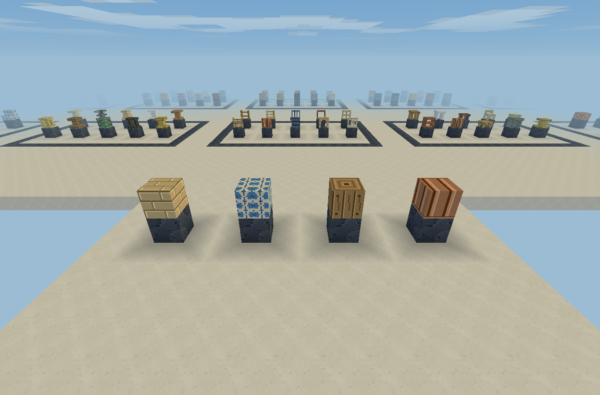
Chi tiết vật liệu — trạng thái tắt
Cùng bốn mẫu ID 249, 260, 269 và 279 khi tắt Chi tiết vật liệu. Cặp ảnh bật/tắt dành cho so sánh hình ảnh; kết luận về hiệu năng GPU không thuộc phạm vi của cặp ảnh.

Nông trại sau chu trình Lưu, xuất và nhập lại
Góc nhìn nông trại trong bản sao mở sau chu trình Lưu, xuất JSON và nhập lại. Ảnh tập trung vào cảnh đang mở; phép so sánh payload trong nhật ký là bằng chứng cho nội dung dữ liệu được giữ lại.

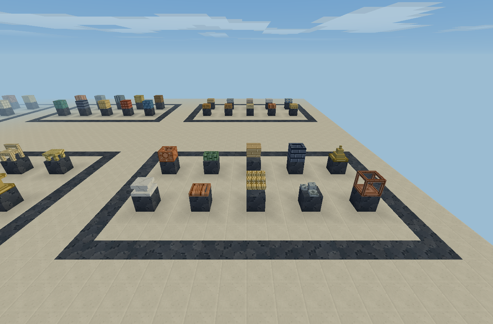
Xưởng nhập lại — ô chi tiết 339–348
Ô trưng bày số 10 của bản xưởng nhập lại, dành cho nhóm chi tiết ID 339–348. Khung này tập trung vào mười mẫu của ô; kiểm tra toàn bộ 100 kiểu logic và dữ liệu lưu nằm trong nhật ký riêng.

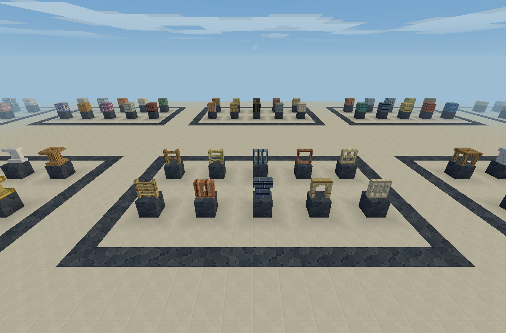
Sau Tiếp tục — nhóm khối 319–328
Nhóm vách và khung thoáng ID 319–328 sau bước tải lại trang và Tiếp tục. Khung hình tập trung vào hình dạng, khoảng trống và vật liệu của ô trưng bày; danh tính bản lưu và payload phục hồi được đối chiếu trong nhật ký.

Sau Tiếp tục — nhóm khối 339–348
Nhóm chi tiết ID 339–348 trong cảnh xưởng sau tải lại trang và Tiếp tục. Phạm vi ảnh là các hình nhỏ và khoảng rỗng của ô trưng bày này; dữ liệu phục hồi được kiểm tra riêng.
Giao diện
Các màn hình và lựa chọn trong giao diện game.

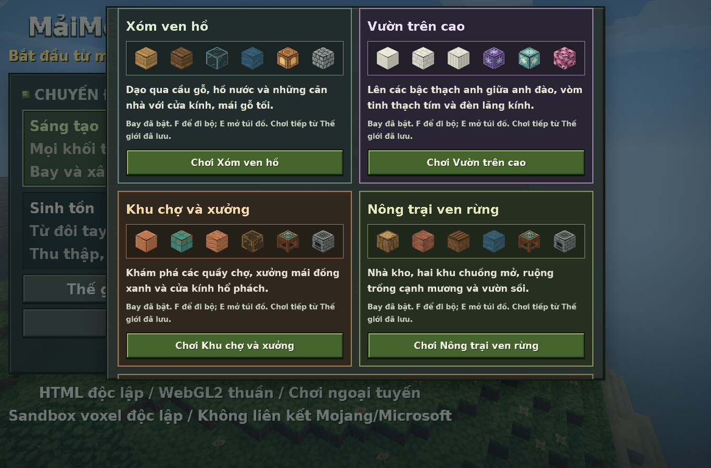
Kho cảnh — Xóm ven hồ và Vườn trên cao
Hai thẻ Xóm ven hồ và Vườn trên cao trong Kho cảnh, với tiêu đề, mô tả, sáu mẫu vật liệu, hướng dẫn và nút Chơi. Phạm vi ảnh là giao diện thẻ cảnh.

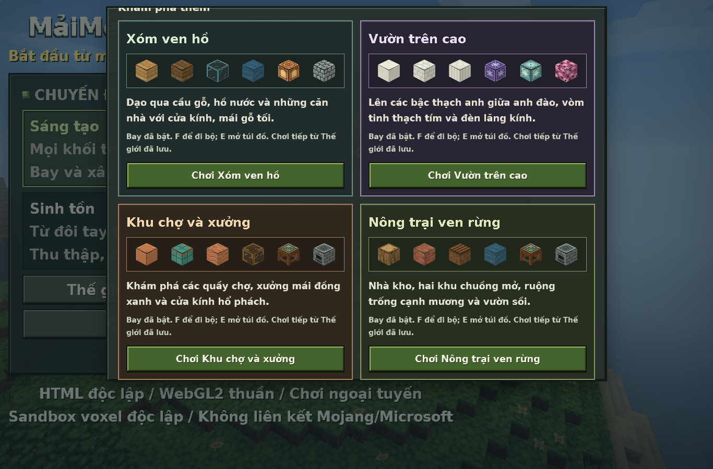
Kho cảnh — Khu chợ xưởng và Nông trại ven rừng
Hai thẻ Khu chợ và xưởng, Nông trại ven rừng trong Kho cảnh. Khung hình tập trung vào nội dung từng thẻ, dãy vật liệu, hướng dẫn và nút Chơi ở hàng này.

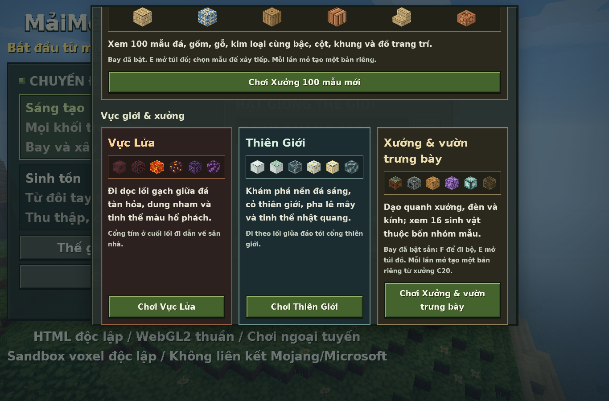
Kho cảnh — ba cảnh đã có
Nhóm Vực giới & xưởng với ba thẻ Vực Lửa, Thiên Giới và Xưởng & vườn trưng bày. Các tiêu đề, mô tả, dãy vật liệu và nút Chơi là nội dung đối chiếu của khung giao diện này.

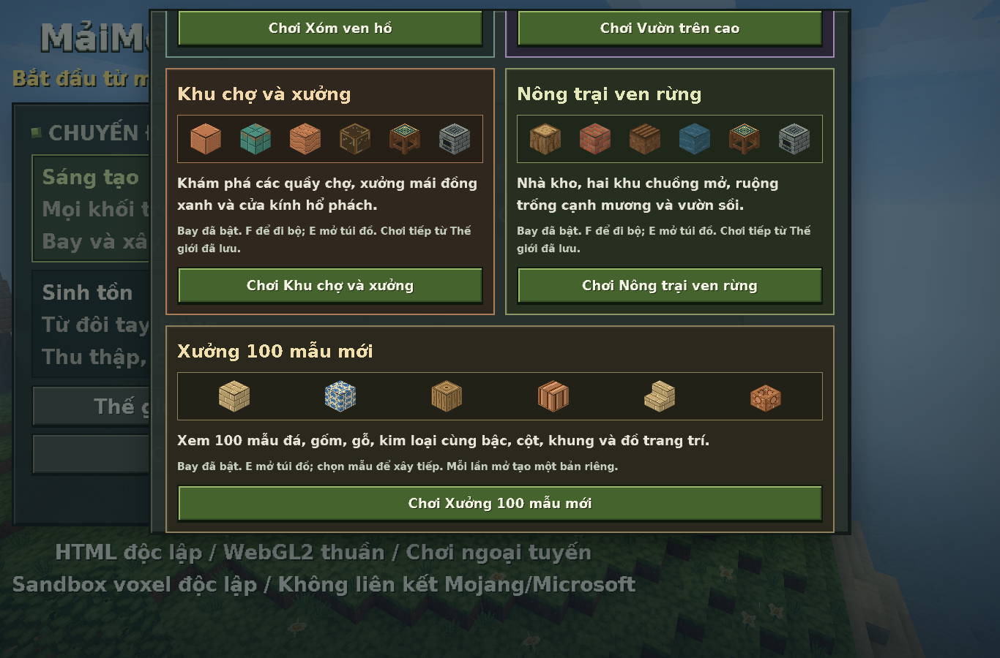
Kho cảnh — Xưởng 100 mẫu mới
Thẻ Xưởng 100 mẫu mới trong Kho cảnh, với phần giới thiệu bộ sưu tập, sáu mẫu vật liệu và nút mở cảnh trưng bày. Mỗi lần mở dùng luồng tạo bản riêng của Kho cảnh.

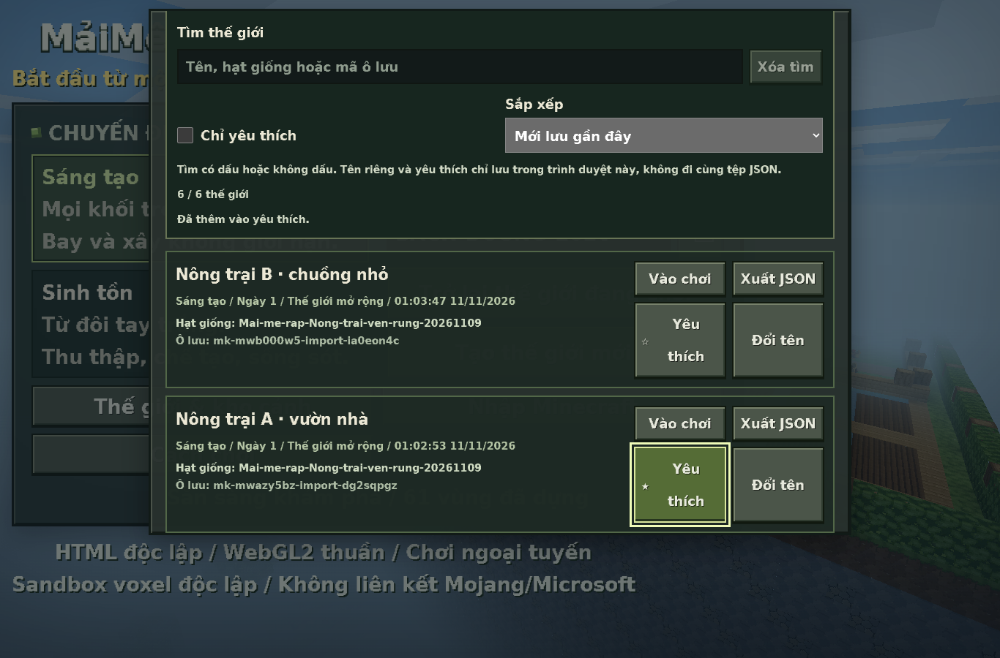
Hai bản nông trại — tên và yêu thích
Hai hàng bản sao Nông trại A · vườn nhà và Nông trại B · chuồng nhỏ trong danh sách thế giới, với tên và lựa chọn yêu thích riêng. Tính độc lập của dữ liệu hai bản sao được đối chiếu trong nhật ký chạy.

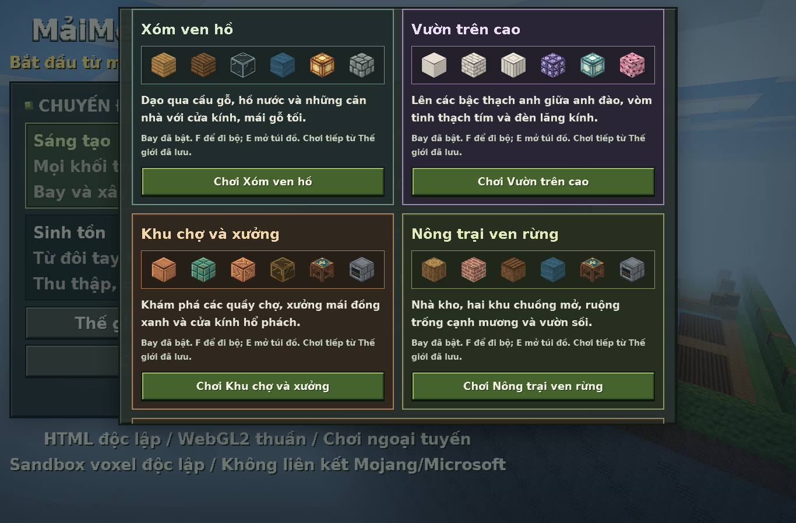
Kho cảnh — khung rộng 1366×900
Kho cảnh ở khung trình duyệt 1366×900 trong bước kiểm gói Cổ điển 16×16, tập trung vào thẻ Xóm ven hồ và Vườn trên cao. Các bảng vật liệu native24 thuộc nhóm ảnh Canvas QA riêng.

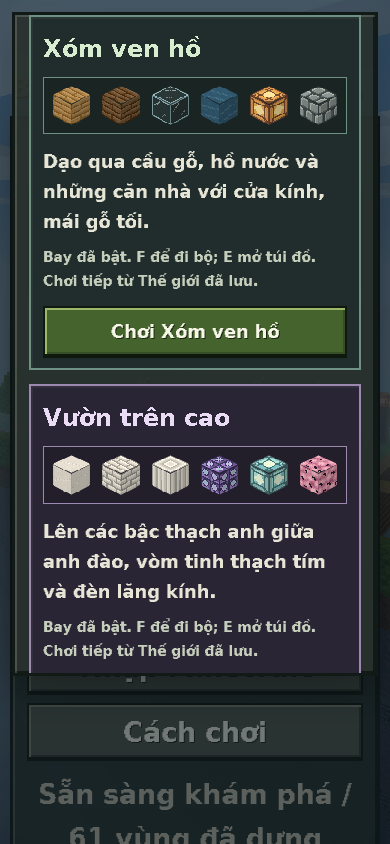
Kho cảnh — khung dọc 390×844
Thẻ Xóm ven hồ trong bố cục một cột ở khung trình duyệt 390×844, thuộc bước kiểm gói Cổ điển 16×16. Đây là kích thước vùng hiển thị trình duyệt, không phải chứng nhận trên một thiết bị di động cụ thể.

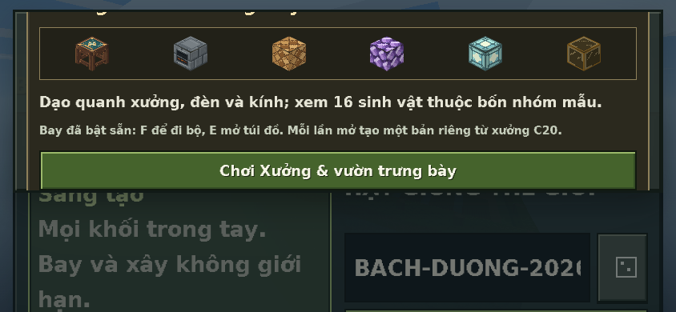
Kho cảnh — nút Xưởng ở khung ngang 844×390
Nút Chơi của cảnh Xưởng & vườn trưng bày cùng phần giao diện xung quanh ở khung 844×390. Khung hình tập trung vào nút đã khai báo; thao tác Tab, Shift+Tab, Escape và nhảy tới bản lưu được kiểm tra riêng.

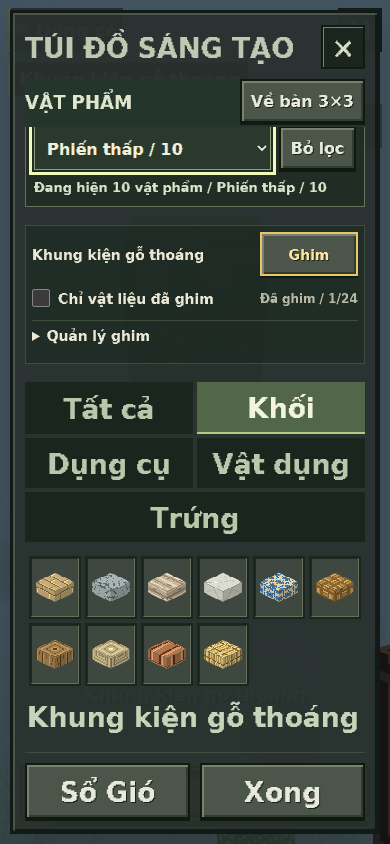
Lọc vật phẩm — khung dọc 390×844
Bộ lọc Bộ sưu tập trong túi đồ ở khung 390×844, khi ở Sáng tạo và chọn nhóm Phiến thấp. Nội dung đối chiếu gồm tên nhóm, hộp chọn, nút Bỏ lọc và thông báo số lượng trong vùng cuộn.

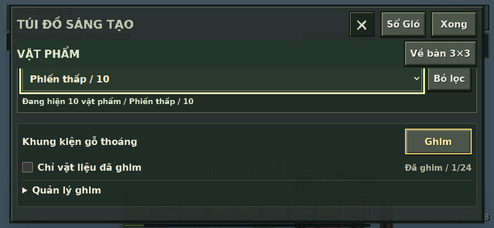
Lọc vật phẩm — khung ngang 844×390
Bộ lọc Bộ sưu tập trong túi đồ ở khung 844×390, khi ở Sáng tạo và chọn nhóm Phiến thấp. Nội dung đối chiếu gồm hộp chọn, nút Bỏ lọc và thông báo kết quả; kiểm tra bàn phím và tìm kiếm có bằng chứng riêng.

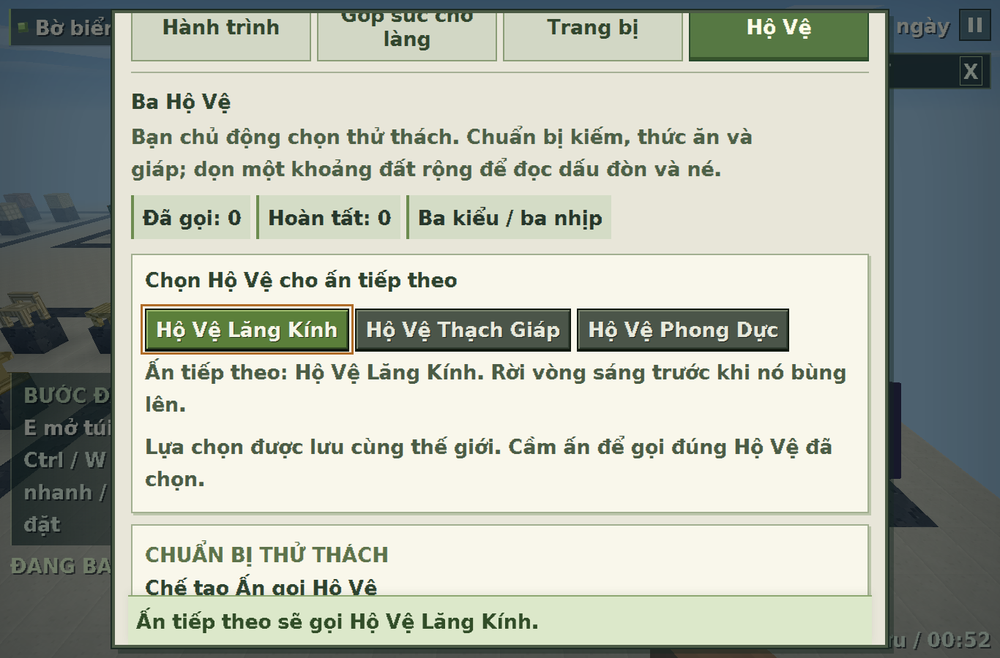
Sổ Gió — vùng chọn ba Hộ Vệ
Vùng chọn Hộ Vệ trong Sổ Gió với ba lựa chọn Lăng Kính, Thạch Giáp và Phong Dực, cùng tên và hướng dẫn cho lần gọi tiếp theo. Ảnh ghi phần giao diện đang hiển thị trong vùng cuộn; thao tác chọn và trạng thái lưu được đối chiếu trong nhật ký.
Icon và chất liệu
Bảng icon hoặc chất liệu được hiển thị bằng lớp canvas để nhìn rõ từng mẫu.

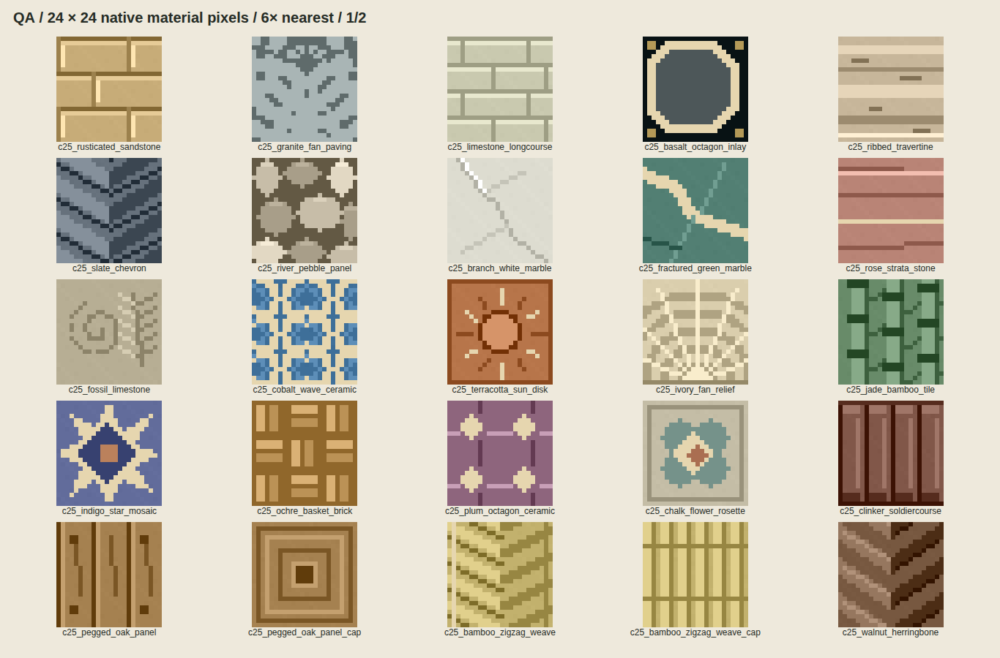
Bảng pixel 24×24 — vật liệu 1/2
Bảng Canvas QA của 25 mẫu vật liệu 170–194, lấy từ các ô native24 có kích thước nguồn 24×24 pixel và phóng 6× bằng nearest-neighbor. Phạm vi đối chiếu là họa tiết, bảng màu và tên từng mẫu.

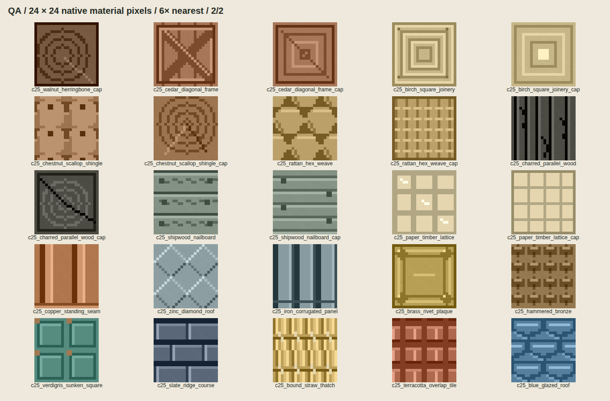
Bảng pixel 24×24 — vật liệu 2/2
Bảng Canvas QA của 25 mẫu vật liệu 195–219, cùng cách phóng 6× từ nguồn native24. Trang này bổ sung các mặt gỗ, vật liệu đan, kim loại và mái cho bộ 50 mẫu qua hai trang.

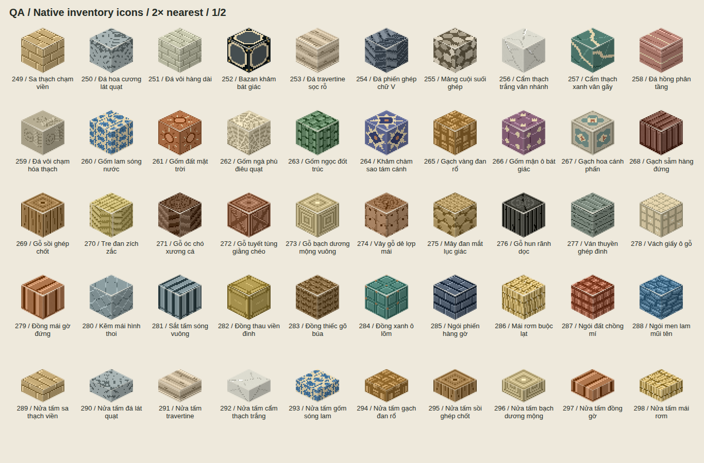
Biểu tượng khối 249–298 — trang 1/2
Bảng Canvas QA của 50 biểu tượng ID 249–298, lấy từ hệ thống vật phẩm và phóng 2×, kèm tên và ID. Nhóm này gồm các khối bề mặt và phiến thấp; ảnh dành cho đối chiếu hình chiếu biểu tượng.

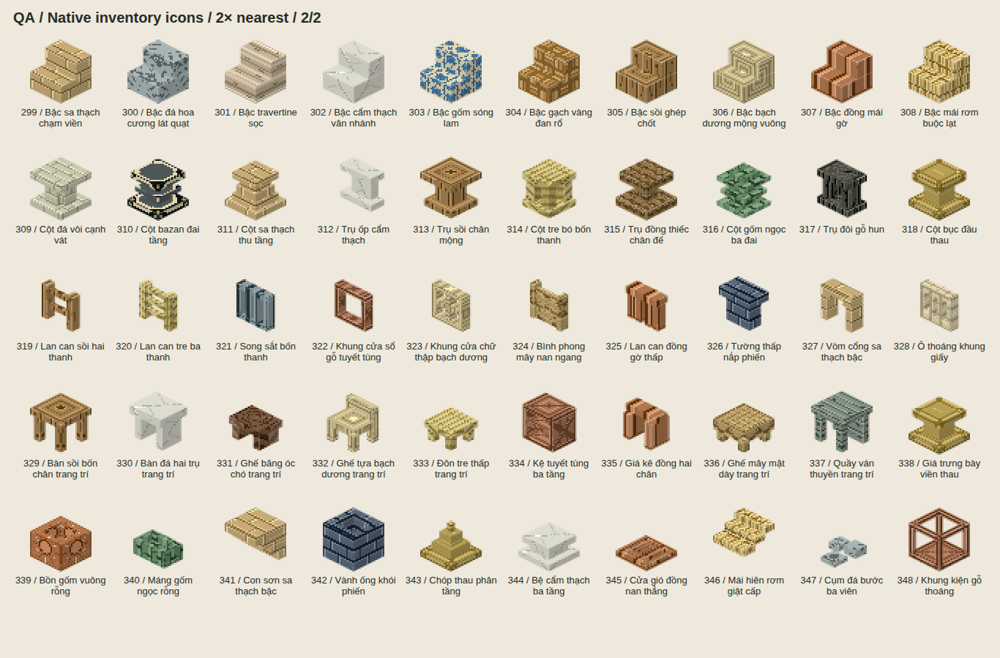
Biểu tượng khối 299–348 — trang 2/2
Bảng Canvas QA của 50 biểu tượng ID 299–348, phóng 2× và kèm tên, ID. Nhóm này gồm bậc thang, cột, vách và khung, nội thất cùng chi tiết trang trí; ảnh dành cho đối chiếu đường bao và khoảng rỗng ở kích thước biểu tượng.
Hình dáng và đòn Hộ Vệ
Khung hình Hộ Vệ được tạm dừng để quan sát hình dáng hoặc vùng báo đòn.

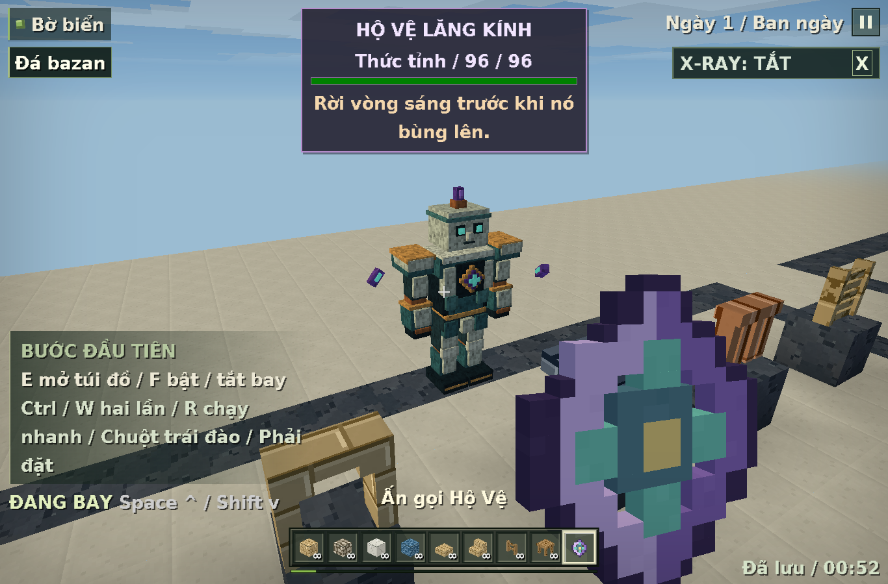
Hộ Vệ Lăng Kính — hình thể trong khung chẩn đoán
Khung chẩn đoán native của Hộ Vệ Lăng Kính có tạm dừng mô phỏng, tập trung vào lớp giáp và các phần tinh thể cùng thông tin trên HUD. Phạm vi ảnh là hình thể tĩnh; nhịp chuyển động được kiểm tra riêng.

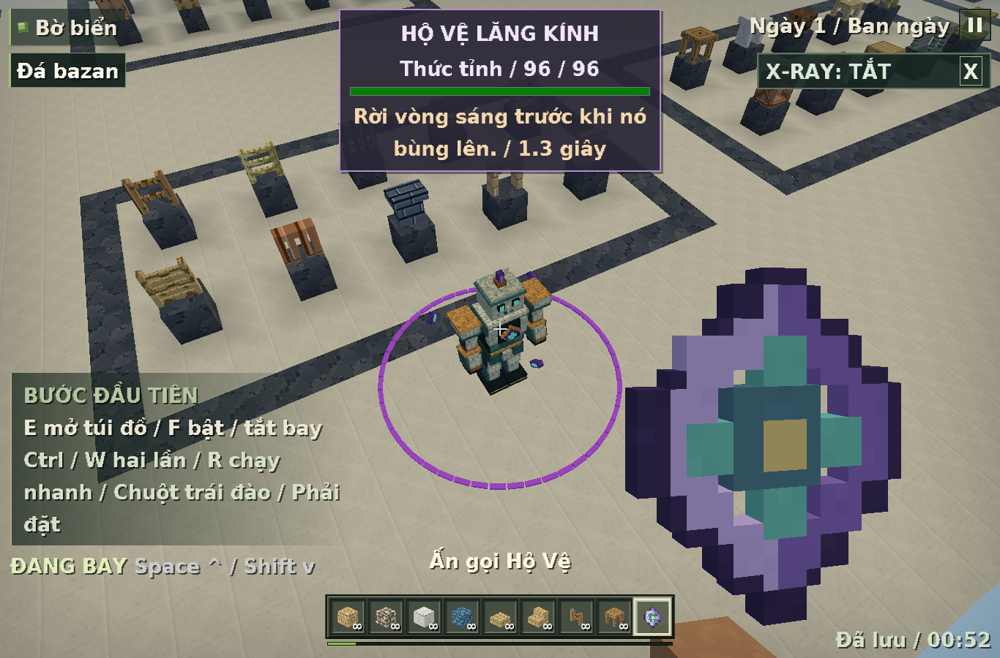
Hộ Vệ Lăng Kính — báo đòn trong khung chẩn đoán
Khung chẩn đoán native tạm dừng mô phỏng sau khi báo đòn của Hộ Vệ Lăng Kính xuất hiện, tập trung vào đường viền vòng báo đòn. Thân Hộ Vệ che một phần vùng tâm. Thời gian báo, sát thương và vùng né được kiểm tra bằng bằng chứng riêng.

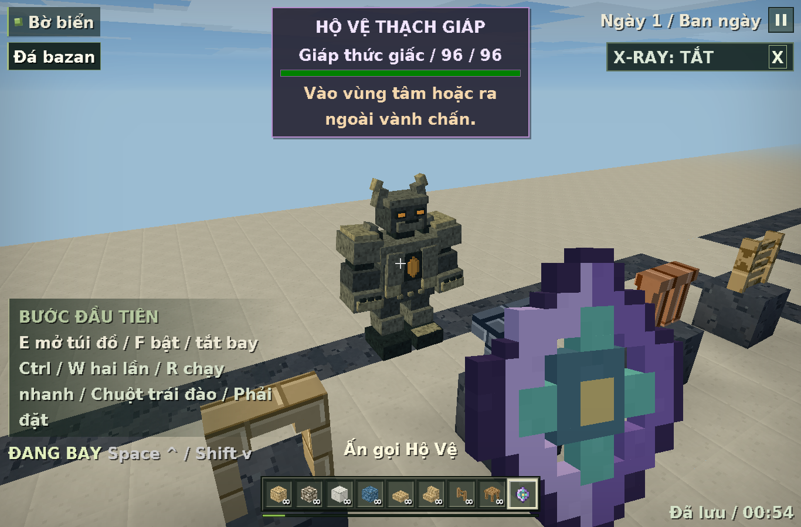
Hộ Vệ Thạch Giáp — hình thể trong khung chẩn đoán
Khung chẩn đoán native của Hộ Vệ Thạch Giáp có tạm dừng mô phỏng, tập trung vào thân thấp, vai và tay đá cùng thông tin trên HUD. Phạm vi ảnh là hình thể tĩnh; nhịp chuyển động được kiểm tra riêng.

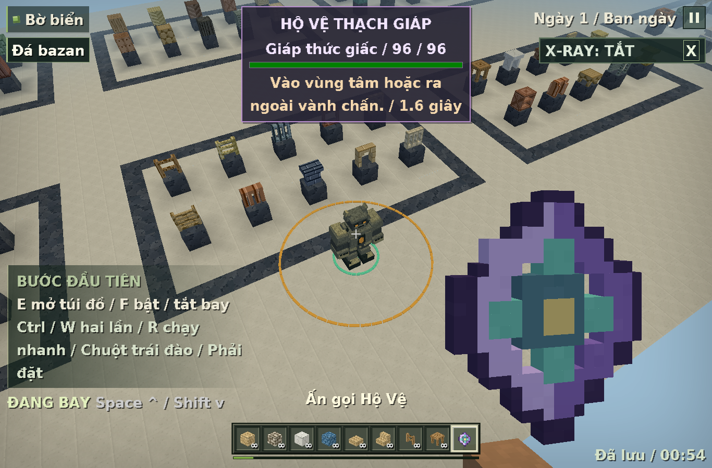
Hộ Vệ Thạch Giáp — báo đòn trong khung chẩn đoán
Khung chẩn đoán native tạm dừng mô phỏng sau khi báo đòn của Hộ Vệ Thạch Giáp xuất hiện, tập trung vào đường viền ngoài và phần nhìn thấy của đường viền trong của vành báo chấn. Thân Hộ Vệ che một phần vành trong và vùng tâm. Thời gian báo, sát thương và vùng né được kiểm tra bằng bằng chứng riêng.

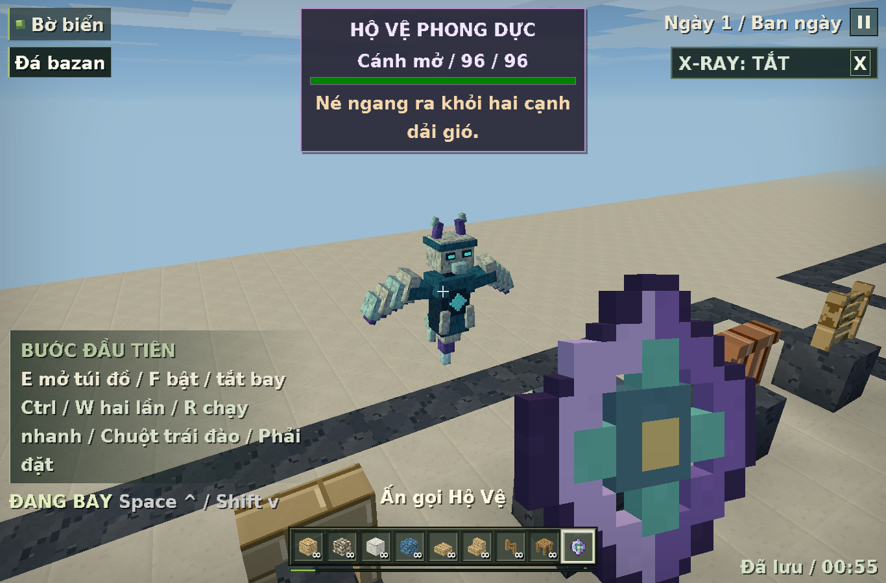
Hộ Vệ Phong Dực — hình thể trong khung chẩn đoán
Khung chẩn đoán native của Hộ Vệ Phong Dực có tạm dừng mô phỏng, tập trung vào tỷ lệ thân, các phiến cánh và phần đuôi cùng thông tin trên HUD. Phạm vi ảnh là hình thể tĩnh; nhịp chuyển động được kiểm tra riêng.

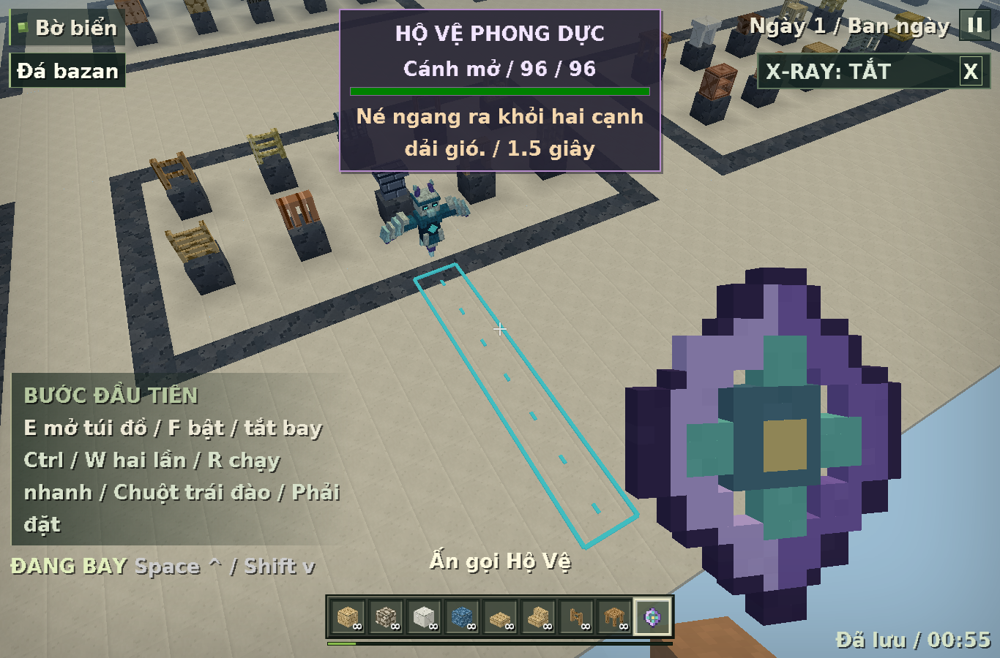
Hộ Vệ Phong Dực — báo đòn trong khung chẩn đoán
Khung chẩn đoán native tạm dừng mô phỏng sau khi báo đòn của Hộ Vệ Phong Dực xuất hiện, tập trung vào dải báo gió với hai cạnh bên và hai đầu. Thời gian báo, sát thương và vùng né được kiểm tra bằng bằng chứng riêng.